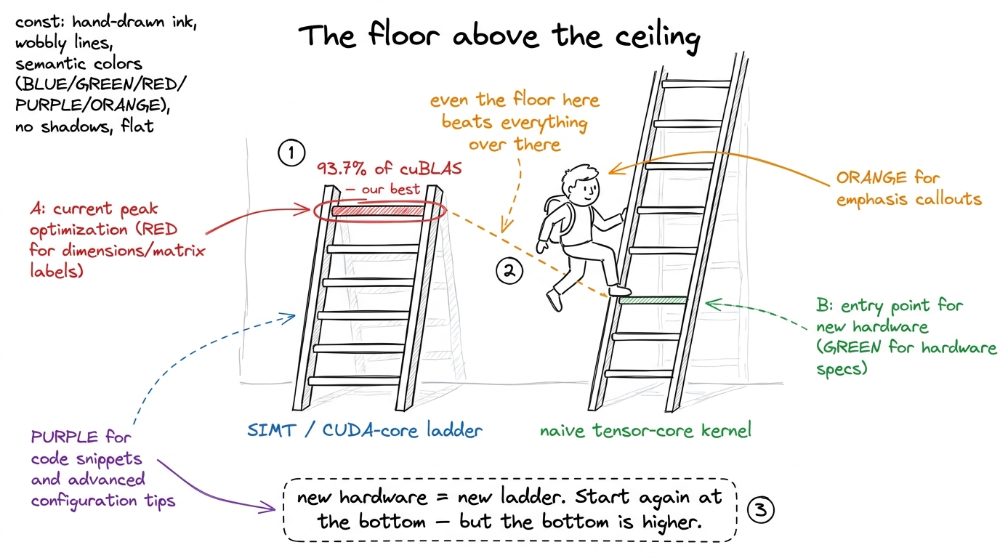
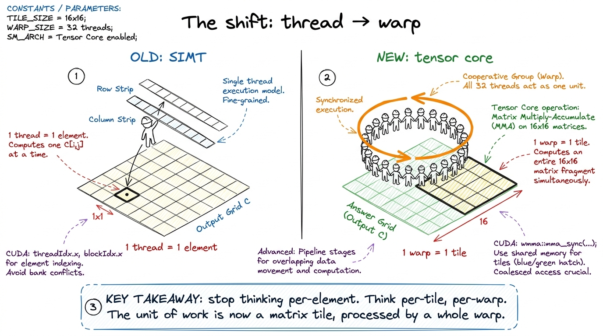
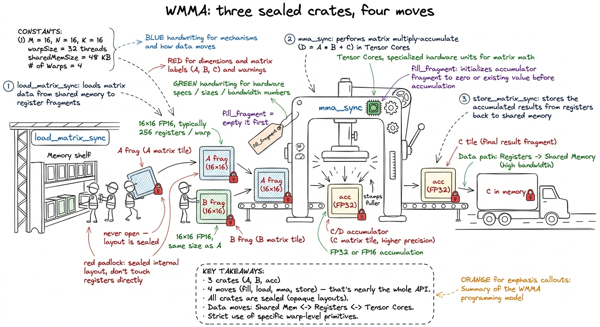
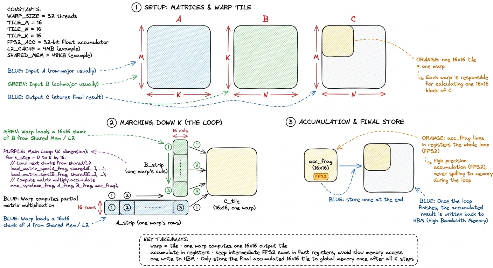
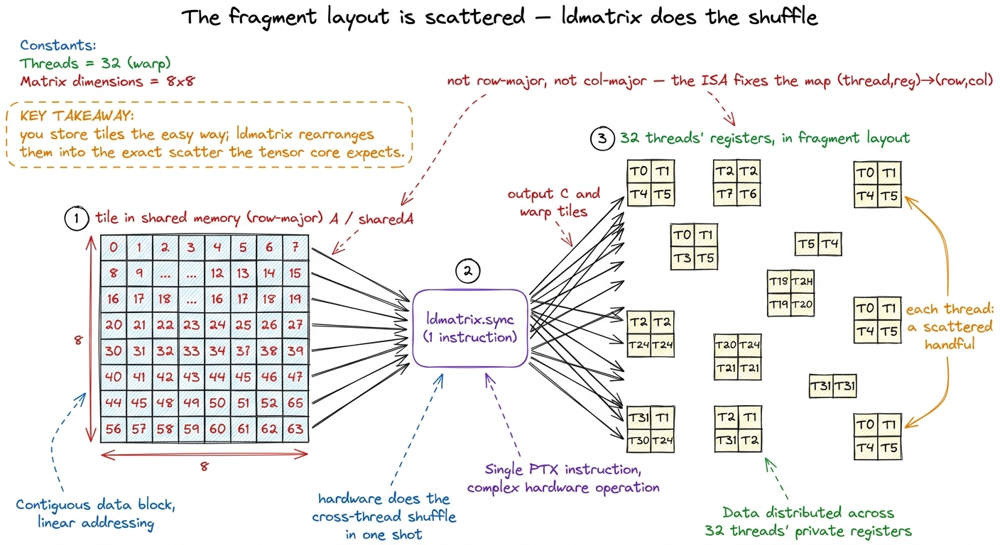
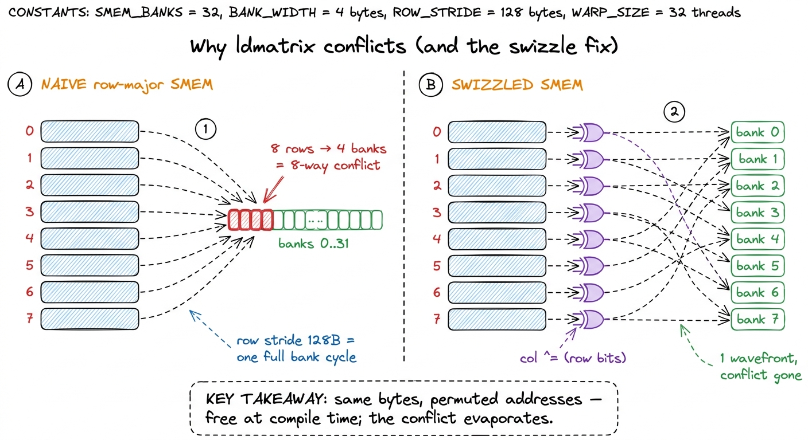

Teaching the tensor-core rebuild
By the end of this chapter you can stand at a whiteboard and teach the whole tensor-core rebuild — fragments, ldmatrix, swizzling, and the one mma instruction underneath it all — so that a student who has only ever seen a "one thread, one number" GPU kernel walks away understanding why we throw that mental model out and start a brand-new ladder. And, crucially, you can teach it without drowning anyone in the WMMA API.
This is the second time your students climb the GEMM ladder. The first time (the SIMT ladder) they tuned a scalar kernel until it hit 93.7% of cuBLAS. That number felt like victory. Your job in this chapter is to explain, gently, why it was a lie of omission — and then to walk them back down to the bottom of a new, higher ladder. Let's build it the way you'll build it for them.
Start with the punchline: the floor is above the ceiling
Here is the sentence that reframes everything. When your students hit 93.7% of cuBLAS last time, that was 93.7% of cuBLAS running on the CUDA cores — the ordinary scalar calculators. But cuBLAS has not seriously used the CUDA cores for matrix multiply since 2017. The real library runs on a different piece of silicon: the tensor cores.

figure rendering · The reframe students need: tensor cores are a whole new, taller ladderWhat a tensor core actually is (say it plainly)
A tensor core is a small piece of hardware, tucked inside each streaming multiprocessor, that does an entire tiny matrix multiply in one instruction. Not one multiply-and-add — a whole little matrix-times-matrix, accumulated, in a handful of clock cycles.
Put the number on the board so the crane feels real. An H100 has around 132 SMs, four tensor cores in each. Together they are rated at about 989 TFLOP/s in BF16 — call it a thousand trillion multiply-adds a second. The CUDA-core FP32 peak on the same chip is roughly a tenth of that. That factor of ten is why we bother.
The one mental shift: the WARP owns the tile
This is the single hardest idea in the chapter, and everything else depends on it. Teach it slowly.
On the old ladder, the rule was: one thread, one output number. Thread 47 computes cell C[3][5], all by itself, holding its own row and column in its own registers. Simple.
The tensor core breaks that rule completely. A tensor-core instruction is issued by all 32 threads of a warp at once, together, as one collective act. The input tiles and the output tile are spread across the registers of the whole warp. No single thread holds a full row. No single thread holds a full column. The 32 threads pool their registers, the hardware reads that pool as three little matrices, multiplies them, and writes the answer back into the pool.

figure rendering · The core reframe: SIMT is one thread per element; the tensor core is oThe gentle on-ramp: WMMA and fragments
Because "the operands are scattered across 32 threads' registers in a pattern nobody can memorize" is terrifying, NVIDIA built a friendly wrapper called WMMA (Warp Matrix Multiply-Accumulate). WMMA's entire job is to hide that scattering. This is your on-ramp, and you should teach it exactly as a set of sealed boxes.
The sealed box is called a fragment. A fragment holds one operand tile. Here is the rule you drill into students: you never look inside a fragment. You never index it. You do not know which thread holds which element — and you don't need to. WMMA promises only this: if you load into a fragment and hand it to the matching multiply, the pieces line up.

figure rendering · The whole WMMA API as a loading dock: three sealed fragment crates andThere are only three kinds of crate and four things you ever do. That is nearly the whole API — say that out loud, because students expect an API to be huge.
The three crates:
- an A fragment — a 16×16 tile of the left matrix,
- a B fragment — a 16×16 tile of the right matrix,
- an accumulator fragment — the 16×16 running total, kept in FP32.
The four moves:
fill_fragment(acc, 0)— empty the accumulator crate before you start,load_matrix_sync(frag, ptr, ldm)— the whole warp loads a 16×16 tile from memory into a crate,mma_sync(acc, a, b, acc)— the crane doesacc = a·b + acc,store_matrix_sync(ptr, acc, ldm)— write the finished tile back out.
_sync, and students think that's about threads "synchronizing" like __syncthreads(). It isn't. _sync means warp-collective: all 32 threads must call it, together, with the same arguments. Hide one inside a divergent if and you don't get a compile error — you get silent garbage. The fix sentence: "these aren't functions a thread calls; they're moves the whole warp makes in lockstep. If one thread skips it, the crate is packed wrong and nobody tells you."Precision: the crane eats 16-bit, sums in 32-bit
One thing to flag clearly: the tensor core does not eat FP32. Its native diet is 16-bit inputs (FP16 or bfloat16), which it multiplies, and it keeps the running sum in FP32. So A and B are half, C is float. Tell students this is not a compromise you're tolerating — it's the exact shape the silicon was built for. Sixteen-bit in, thirty-two-bit accumulate.
The tiny by-hand version, and the naive kernel
Now make it concrete with numbers small enough to hold in your head, then show the whole kernel.
[[0,0],[0,0]]. Step down K in chunks of 2. Load a 2×2 tile of A, load a 2×2 tile of B, do one mma — that adds a 2×2 partial product into the accumulator. Do it again for the next K-chunk, adding on top. After all K-chunks, the accumulator holds the finished 2×2 tile, and you store it once. Now say: "the real hardware does this with 16×16 tiles and does the whole 16×16 multiply in ONE instruction — but the shape of the loop is exactly what we just did by hand."The naive tensor-core kernel is just the old naive SIMT kernel, promoted from elements to tiles: one warp per 16×16 output tile. The warp zeros its accumulator, marches down K sixteen at a time — load A tile, load B tile, mma_sync — and stores once at the end.
constexpr int WMMA_M = 16, WMMA_N = 16, WMMA_K = 16;
wmma::fragment<wmma::matrix_a, 16,16,16, half, wmma::row_major> a_frag;
wmma::fragment<wmma::matrix_b, 16,16,16, half, wmma::col_major> b_frag;
wmma::fragment<wmma::accumulator, 16,16,16, float> acc_frag;
wmma::fill_fragment(acc_frag, 0.0f);
for (int k = 0; k < K; k += WMMA_K) { // march down K
wmma::load_matrix_sync(a_frag, A_tile_ptr, K);
wmma::load_matrix_sync(b_frag, B_tile_ptr, K);
wmma::mma_sync(acc_frag, a_frag, b_frag, acc_frag);
}
wmma::store_matrix_sync(C_tile_ptr, acc_frag, N, wmma::mem_row_major);
figure rendering · The naive tensor-core kernel: each warp owns a 16×16 tile, accumulatesThe catch — same as last ladder, one level up
Here is where you show students that the ladder repeats. The naive tensor-core kernel is fast — low tens of TFLOP/s, several times the best scalar kernel — but it's only about 8% of cuBLAS. The crane is mostly standing idle, waiting.
Why? The exact same reason as the naive SIMT kernel: memory, not math. Every warp reads its A strip and B strip straight from far-away HBM. Neighboring warps re-read hugely overlapping data. Two warps in the same tile-row of C both stream the same 16 rows of A from HBM. Nothing is staged on-chip. The 989 TFLOP/s crane spends its life waiting on loads.
So the to-do list writes itself, and it mirrors the SIMT ladder rung for rung: stage tiles in shared memory so warps reuse on-chip copies instead of re-reading HBM; then give each warp more than one tile so there's enough work to hide the loads. That's the climb. And on tensor cores, staging into shared memory drags a brand-new gremlin into the light: the bank conflict.
Opening the sealed box: fragments and ldmatrix
Higher up the ladder, the sealed WMMA crate stops being enough, and you do have to look inside. This is where you level up from WMMA to the raw instruction, and you tell students plainly why.
When we stage tiles in shared memory, we want to move them into registers in exactly the scattered pattern the tensor core expects. WMMA hides that pattern, so it also hides the move — and that move is where the last of the speed lives. To control it, we drop to the raw mma.sync PTX instruction and manage the shared-to-register hop ourselves.
The scattered pattern is real. For a small MMA shape, each of the 32 threads holds a handful of elements of each operand, in an interleaved, quadrant-based arrangement fixed by the hardware ISA — not row-major, not column-major, just the layout the tensor core was wired to expect. You don't design it; you feed it.

figure rendering · The technical translation of the boarding metaphor: shared-memory tileldmatrix shuffles them into the tensor core's fixed, scattered per-thread fragment layout.That gate agent is a real instruction: ldmatrix. One ldmatrix issued by the warp reads little 8×8 patches of FP16 out of shared memory and drops them into the 32 threads' registers already in fragment layout — doing all the cross-thread shuffling in hardware, in one shot. It's the bridge between "how we store tiles" and "how the tensor core reads them." And it is exactly on this bridge that our next gremlin lives.
The bank conflict, made concrete
Shared memory is split into 32 banks, each handing out 4 bytes per cycle. A warp's 32 lanes can read all 32 banks at once — beautifully fast — only if their 32 addresses land in 32 different banks. If two lanes want words in the same bank, the hardware serializes them: a 2-way conflict costs 2 cycles, an 8-way conflict costs 8.
Now the trap. To assemble one fragment, ldmatrix needs the 8 rows of an 8×8 tile. But that tile lives inside a wider slab we staged — say 64 elements wide, row-major. So consecutive rows are 64 × 2 bytes = 128 bytes apart. Banks repeat every 32 × 4 = 128 bytes — exactly the row stride. So every row starts at the same bank offset, and all 8 rows funnel into the same 4 banks. That's the 8-way conflict the profiler screams about, and it fires on every ldmatrix on the hot path.

figure rendering · The 8-way conflict and its cure: the naive layout collapses 8 rows intThe swizzle: one XOR that costs zero bytes
The classic fix is padding — store each row a little wider so successive rows fall into different banks. It works, but it wastes precious shared memory. The better fix costs nothing.
The insight: a bank is chosen by the low bits of the address, and XOR is a permutation. Before we store each element, we perturb its column index by XOR-ing in a few bits of its row index. That shuffles each row's elements into a different set of banks — without moving any element to a different row, without using one extra byte. We apply the same XOR when we store and when we compute ldmatrix addresses, so the data comes back correct; only the bank assignment changes.
// same permutation on store and on ldmatrix-address computation
uint swizzle(uint row, uint col) {
return col ^ ((row & 0b1100) >> 2); // XOR row bits into the bank field
}Row 0 is untouched, row 1's elements shift by one bank-group, row 2 by two, and so on — the eight rows that piled into four banks now spread across distinct banks. The code change is almost insultingly small: everywhere you compute a shared-memory address, route the column through swizzle(). No new buffers, no padding, one XOR the compiler folds into the address math.
ldmatrix lines should drop from an 8× wavefront ratio to 1×. Run Nsight Compute. Before: 8×, shared pipe is the top stall. After: the counter reads literally 0, ratio is 1.0. The throughput roughly doubles — this kernel jumps from about a quarter of cuBLAS to about 50%. "Half of cuBLAS, from a permutation that costs zero bytes and one XOR." That is one of the best trades on the whole ladder, and it lands because you predicted it first.Teaching notes: the board sequence
Deliver it in this order, and it never collapses:
- The reframe (5 min). "93.7% was a lie of omission." Draw the two ladders, floor-above-ceiling. Get the groan.
- The crane (5 min). Tensor core = does a whole tile per instruction. The 10× number. Bricklayer vs. crane.
- The one shift (8 min). Thread → warp. Draw the 32 threads holding hands owning one tile. Repeat it three times; it's the hardest idea.
- Sealed crates (10 min). Three fragments, four
_syncmoves. Do NOT open the crate. The tiny 2×2-tile by-hand loop. - The catch (5 min). 8% of cuBLAS. Formula-1 towed by a bicycle. Same memory lesson, one level up.
- Open the box (10 min). Only now: fragments really are scattered;
ldmatrixis the gate agent; the bank conflict; the XOR swizzle. Predict-then-measure to 50%.
8× become 0, and the TFLOP/s roughly double, in real time. If you can only show one number all lecture, show that counter flipping to zero — it makes the abstract XOR viscerally real.You can now teach
- Why the 93.7%-of-cuBLAS victory was a lie of omission, and why tensor cores are a whole new, taller ladder whose floor beats the old ceiling.
- What a tensor core is in plain words — the crane that lays a whole 16×16 tile per instruction — and the ~10× / 989-TFLOP/s number that motivates it.
- The one hard mental shift: the warp owns the tile, not the thread — and how to keep students from carrying the old SIMT model across.
- WMMA as sealed crates: three fragments, four
_syncmoves, and why you deliberately never look inside — plus the FP16-in / FP32-accumulate precision shape. - The naive kernel's catch (8% of cuBLAS, starved by HBM) and the to-do list that mirrors the SIMT ladder: stage in shared memory, then give each warp more tiles.
- The top-of-ladder trio —
ldmatrix, bank conflicts, and the XOR swizzle — taught predict-then-measure, ending on the counter flipping from 8× to 0 and the jump to ~50% of cuBLAS.